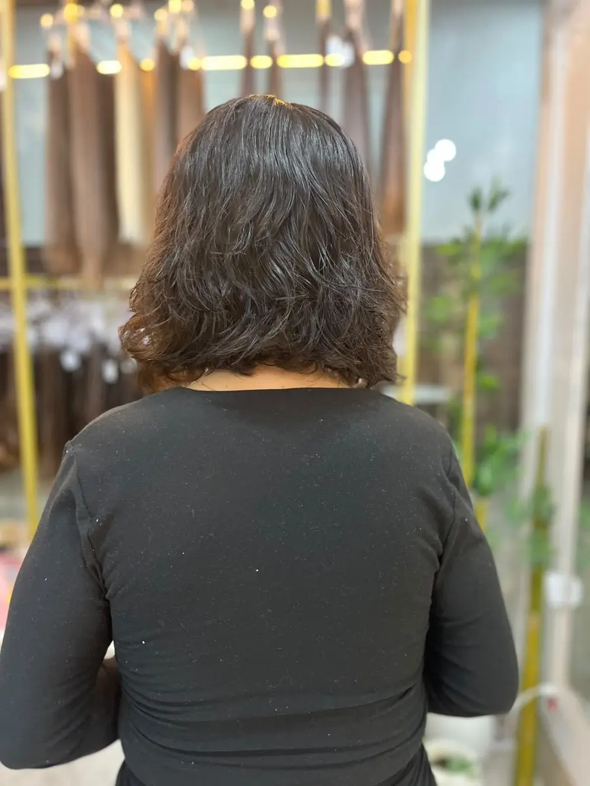
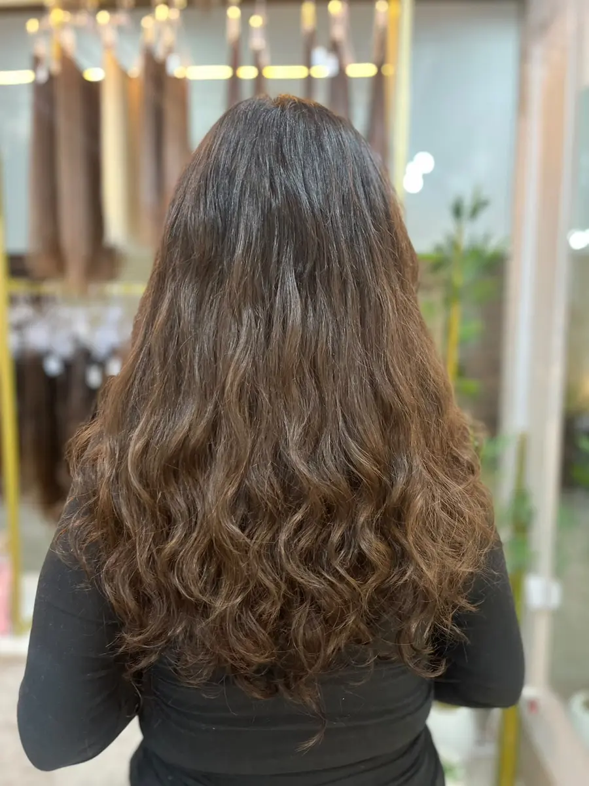
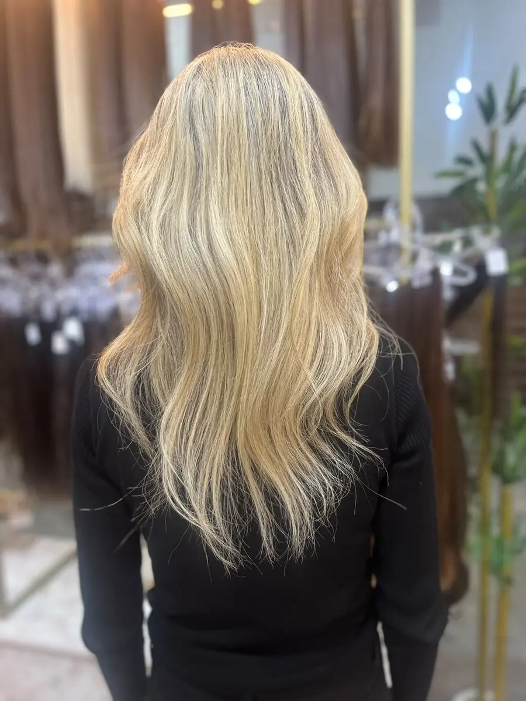
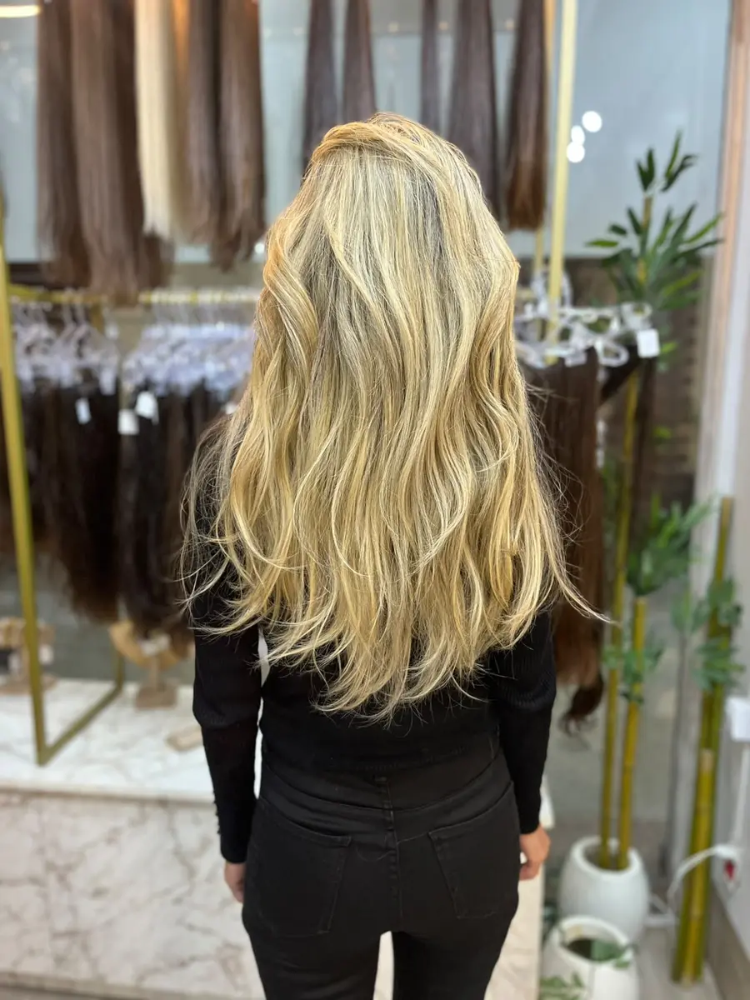
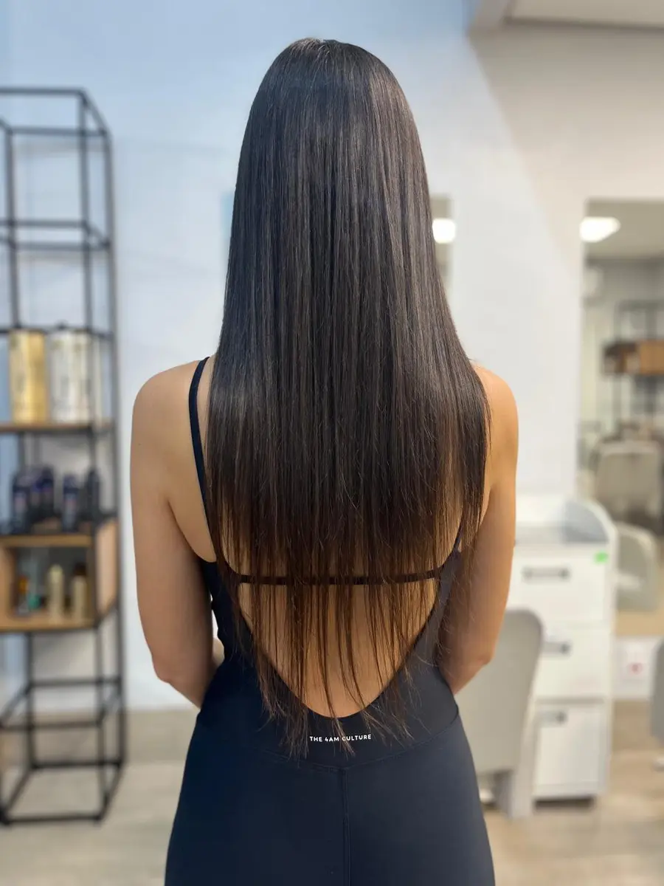
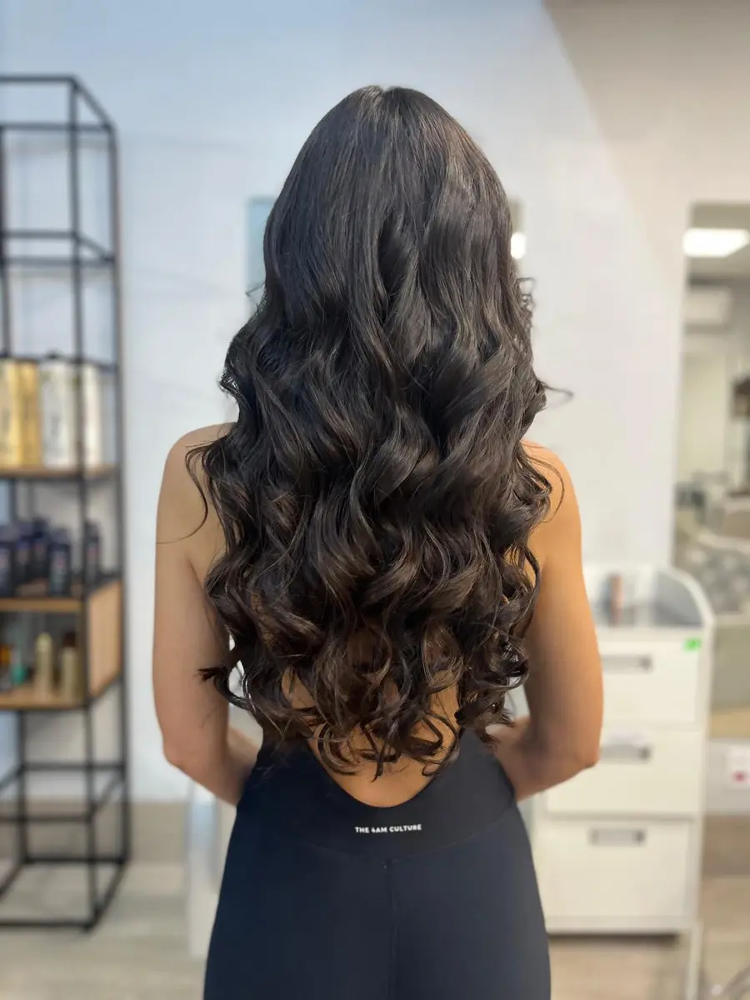
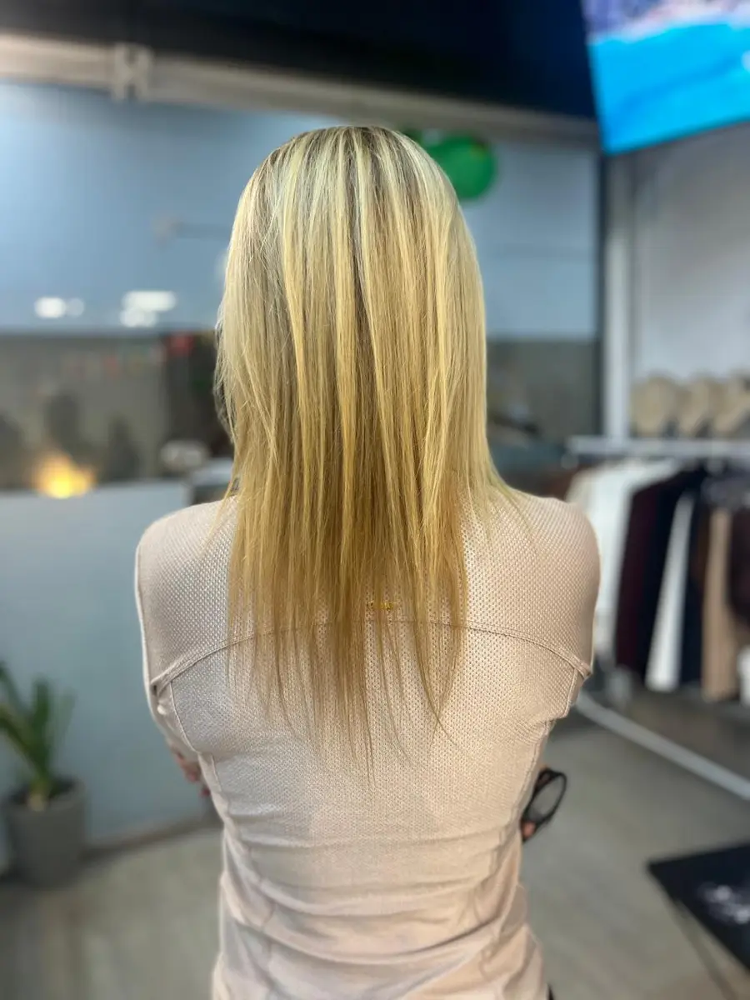
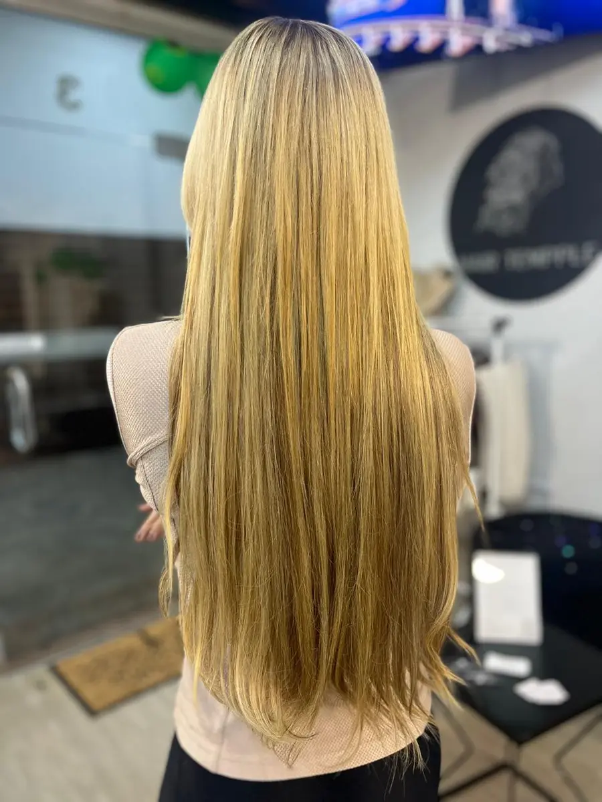

Transformação 01


40 anos de história · Porto Alegre
Técnica personalizada, acabamento impecável e 40 anos de história transformando cabelos.
Antes e depois
Arraste o controle para comparar. Antes fica sempre à esquerda e Depois à direita.








1 de 4
Cuidado completo
Veja uma seleção. A lista completa está organizada por categoria e com valores iniciais confirmados.
Aplicação, manutenção, retirada e montagem de faixas.
Manutenção a partir de R$ 120Iluminação, contorno e transformações de cor.
A partir de R$ 200Opções de reconstrução, hidratação e alinhamento.
A partir de R$ 100Coloração, tonalização e encaixe do Mega Hair.
A partir de R$ 200Acompanhamento profissional conforme avaliação.
A partir de R$ 350Cuidados em casa
Linhas profissionais e itens de cuidado capilar. Consulte a disponibilidade atual pelo WhatsApp.
Limpeza hidratante para cabelos secos e ressecados.
A partir de R$ 111Máscara reconstrutora para reposição de massa e aminoácidos.
A partir de R$ 135Óleo finalizador para brilho, maciez e proteção térmica.
R$ 155Encaixe de cor, corte e distribuição para integrar o alongamento.
A técnica considera o cabelo natural, o objetivo e a rotina de cuidados.
Tradição familiar unida a constante aperfeiçoamento.
Mais de 25 anos de experiência para cada especialista.
Nossa história
Jerusa & Valesca
Olá, somos as especialistas Jerusa e Valesca. Um pouco da nossa história...
Crescemos em uma família onde a beleza e o cuidado com os cabelos atravessam gerações. Desde cedo, acompanhamos de perto o trabalho da nossa mãe, Suzete Nowitski, referência em beleza e caracterização. Foi dentro desse universo que nasceu a nossa paixão pela profissão.
Hoje, somamos mais de 25 anos de experiência cada uma, unindo tradição familiar, conhecimento técnico e constante aperfeiçoamento. À frente do Hair Tempple Mega Hair, damos continuidade a uma história construída há décadas, com foco em técnicas de alongamento e transformações personalizadas.
Para nós, Mega Hair vai muito além de comprimento e volume. Cada cabelo tem uma história, e cada transformação precisa respeitar a identidade de quem o usa.
Hair Tempple — há 40 anos transformando vidas e realçando a beleza de quem faz parte da nossa história.
Avaliações Google
Comentários completos, sem fotos de perfil, com acesso direto às publicações verificadas.
“Sou cliente há mais de 20 anos e, para mim, a Jerusa é referência em Porto Alegre quando o assunto é cabelo e mega hair. Confio no trabalho dela de olhos fechados! ❤️ E é muito bacana acompanhar esse novo momento: o espaço está passando por uma transformação linda, cada vez mais moderno, tecnológico e atualizado com o que há de melhor em técnicas, tendências e mega hair. E os cabelos que ela está trazendo estão simplesmente surreais de lindos! 😍 É a evolução de um trabalho que já era excelente, agora caminhando para um conceito ainda mais moderno, sofisticado e completo. Qualidade, experiência e confiança de mais de duas décadas. Recomendo MUITO! ⭐⭐⭐⭐⭐”
“Nota 10, trabalho impecável da Waleska. Sou fã deste método. Já usei com queratina, destruiu meu cabelo. Hj com a aplicação do mega da Hair Templle, costurado, meu cabelo está saudável!”
“Ótimo atendimento. Melhor lugar para colocar mega!! Tem opções lindas de cabelos para todos os gostos, e a técnica usada é ótima, fica perfeito.”
“Tô apaixonada no trabalho da Valesca, já estava desistindo de ter mega pois a antiga técnica que usava não me trazia conforto. Super recomendo.”
“Sou cliente há anos e adoro o trabalho e o ambiente das meninas. Especializadas em mega hair, super qualificadas, produtos de ótima qualidade e atendimento muito agradável.”
“Uso mega hair há mais de 20 anos e sempre fiz com Hair Tempple, pois o método usado trás mais firmeza. E profissionais são excelentes.”
“Maravilha, minha autoestima aumentou..pessoal maravilhoso..nota 10!”
“Atendimento impecável, profissionais super atenciosas e um ambiente incrível que nos faz sentirmos em casa! Fiquei encantada com o resultado do meu mega hair. Dá pra confiar de olhos fechados!”
“Achei espetacular o atendimento, as meninas são uns amores. O serviço e de primeira, fui em 3 lugares diferentes e não ficou como eu queria meu mega, fui lá e sai feliz da vida com meu cabelo perfeito. Parabéns meninas.”
1 de 9
Hair Tempple por dentro
Um guia visual da fachada, da identidade da marca, das áreas de atendimento, dos lavatórios e da variedade de cabelos.
Abrir guia do espaçoInspiração
Toque em qualquer fotografia para ampliar.
Perguntas frequentes
Respostas baseadas na apostila técnica e nos dados confirmados da Hair Tempple.
A escolha depende da cor, textura, espessura, quantidade e condição dos fios naturais, do corte atual e do resultado desejado. A definição ocorre durante a avaliação.
O intervalo de manutenção depende da técnica utilizada e do número de faixas aplicadas. A recomendação é definida individualmente após avaliação.
A apostila orienta lavar com shampoo de qualidade, condicionar em todas as lavagens e desembaraçar com cuidado, sem puxar faixas ou pontos de fixação.
É necessário evitar calor excessivo, usar protetor térmico e manter o calor afastado dos pontos de fixação. A secagem da raiz varia conforme a técnica.
Localização
Abra o mapa para conferir a rota até o espaço.
Abrir no Google MapsSua transformação começa aqui
Converse pelo WhatsApp e verifique a disponibilidade para sua avaliação.